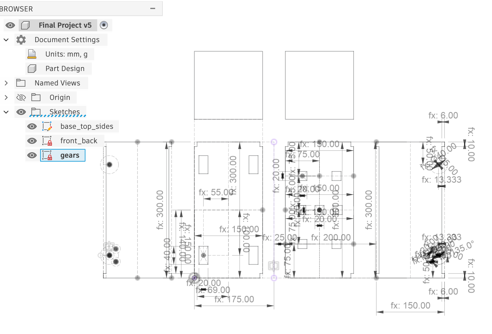
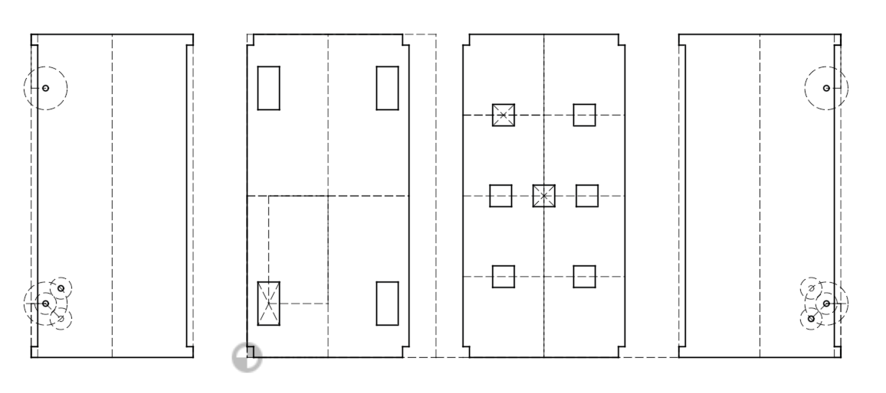
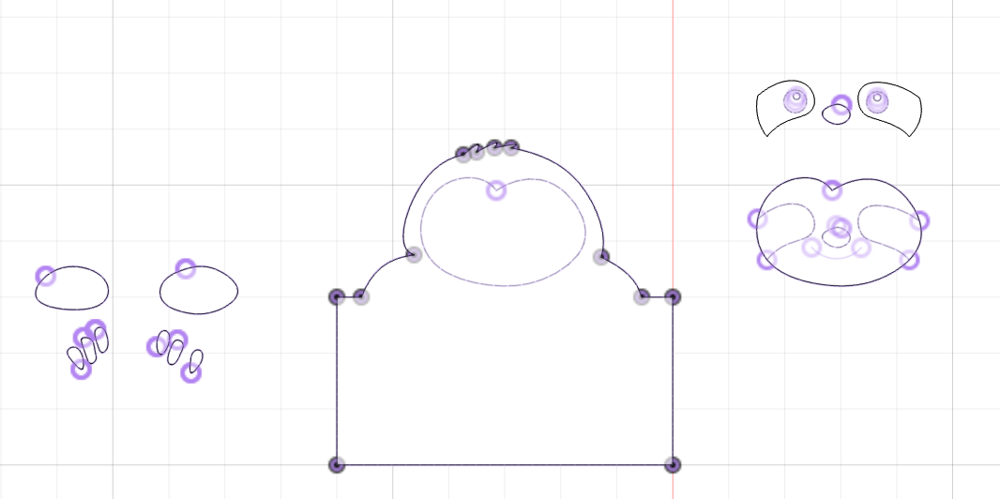

<div class="textcontainer">
<p class="margin"> </p>
<h3>Week 5: 3D Design & Printing</h3>
<h4>Assignment: Model and 3D print something</h4>
<a href='./Key.f3d' download > Download my CAD file </a> <br>
<a href='./Body1.stl' download > Download my STL file </a> <br>
<a href='./eliza.gcode' download > Download my gcode file </a> <br>
For this week's modeling, I decided to CAD my house key. Because it has a fun hole in the top,
I thought it would be fun to make two of them and then have them be earrings. I have yet to
figure out what a good wire to use for that is, but until then, I will just have these two
copies of my key. <br>
<img src="./keys.png" style="width: 40%" alt="design png"> <br>
Something that was challenging about the cadding was getting the indent shape in the
middle of the key. To do this, I created a little ring on the bottom and lofted the surface
between the ovals. Then, I exported. I didn't need support because I put the key on its
back. It took about 20 minutes to print each copy. I decided to make them white because
it allows you to see the detail of the rings better.
<h4>Assignment: Scan something</h4>
<a href='./eliza_final.stl' download > Download my STL file scan </a> <br>
Scanning was hard! First, it didn't turn on, but that's because the wire we were
using to connect the scanner to the computer for some reason didn't work.
Then! Once we figured that out, it was hard to find a shape large enough with clear
boundaries to scan. It got easier as I practiced with different shapes.
Something else that was hard was figuring out how to trim the shapes most successfully.
I think the solution is just to be patient and outline the shapes carefully even
though it takes a while. Then, I filled the holes, which is a great tool.
Finally, I took two different scans, one of most of the shape and the other of the bottom
that I missed and I tried to merge the images together. However, either it merged
them completely incorrectly (so I fixed manually) or it did it super well but then
wouldn't let me look at the merged file. Another thing I was confused about was why
holes reappeared when I merged shapes. Eventually, I determined that the best approach is
just to be really careful with the points you choose to overlap and then merge in manually.<br>
Here is my scan image and the shape I was scanning.
<img src="./scan_image.png" style="width: 40%" alt="design png"> <br>
<img src="./sewing.JPG" style="width: 40%" alt="design png"> <br>
<br>
<h4>Assignment: Final Project Planning </h4>
My finalized idea is to have a sloth with buttons made with
magnets and capacitors on the top. There will be 3 rows of buttons.
The first row is the open/close which opens and closes the front face of
the box, which is where your phone will go. This is attached to a servo in
a circuit inside of a sloth. Then, the second row is a timer which dictates
how long the sloth goes away for. Finally, the other row is start or stop.
When start is on, you cannot take your phone out, it will just beep
angrily instead. However, if you turn it off, the sloth will make a sad
noise and then allow your phone to be taken out. When the timer is up, the
sloth moves back and makes a happy noise.
<br>
I will hide the circuit board, battery, and 2 motors/wirings on the
floor of the sloth. Then, I will have another layer of wood on top of this
to hide all of the wiring. However, the servo will still be on top so that
it can move the hinge on the top of the sloth.
<br>
The gear system on the inside will be the wheel, with a gear that attaches to
another gear that attaches to a motoro on each side. All these gears will be
on axels which will be made with dowels.
<br>
I began by drawing a sketch of all of the different parts/vision for my project.
<div style="display: flex; align-items: center; gap: 15px; flex-wrap: wrap;">
<img src="./handwritten2.jpg" style="width: 48%" alt="box">
<img src="./handwritten1.jpg" style="width: 48%" alt="box">
</div>
First, here is the CAD for my final project.
<p></p> <br>
Here is just the CAD for the body.
<p></p> <br>
Once I have solidified the parameters I am going to use for the body,
I will do the sloth parts of it, which are in another CAD file until
I am sure about dimensions.
<p></p> <br>
Here are the steps of CAD that I will do as I build out the project more carefully
<ul>
<li>Gear systems</li>
<li>The finalized sloth face/back</li>
<li>The finalized side of the sloth arms</li>
<li>Cad for sloth pieces that go on top</li>
<li>Add holes in the bottom top face (both inside and outside) for the extra magnets</li>
<li>Add extra top face to stabilize the read top face with the holes</li>
<li>Add mechanisms to the sides to stabilize the face that will cover the breadboard (later)</li>
</ul>
Bill of materials
<ul>
<li>6mm plywood (or 4 if there isn’t 6) for laser cutting (will start in cardboard for MVP) (Body, gears, face, arms on the side)</li>
<li>4 omni wheels</li>
<li>4 dowels to mount the gears</li>
<li>1 servo</li>
<li>2 regular yellow motors</li>
<li>2 motor drivers</li>
<li>A breadboard (and the right pins/wires to connect the components)</li>
<li>A microcontroller</li>
<li>The capacitor material to add to the top buttons</li>
<li>2 magnets x 7 holes + 2 magnets x 3 little sloths (20 total little magnets)</li>
<li>3 x 3d printed little sloths (so a 3d printer + plastic)</li>
<li>Wood glue + hot glue</li>
<li>1 hinge + later materials to motorize my hinges (3d printed or laser cut)</li>
</ul>
Timeline
<div style="border-left: 3px solid #8B7355; padding-left: 20px; margin: 10px 0;">
<div style="margin-bottom: 24px; position: relative;">
<div style="position: absolute; left: -27px; top: 4px; width: 12px; height: 12px; background: #8B7355; border-radius: 50%;"></div>
<strong>Week of March 9th</strong>
<ul><li>Practice using wheels in my capacitive sensor design to measure distance (see if I can find omni wheels)</li></ul>
</div>
<div style="margin-bottom: 24px; position: relative;">
<div style="position: absolute; left: -27px; top: 4px; width: 12px; height: 12px; background: #8B7355; border-radius: 50%;"></div>
<strong>Week of March 23rd</strong>
<ul>
<li>Laser cut the shape of box (but not the hidden middle face)</li>
<li>Set up the pieces that go on top with capacitors (magnets also if extra time)</li>
<li>Add the wheels with the motor (but not the servo, just add the hinge to the front)</li>
<li>Program the following:
<ul>
<li>Get the motors to drive the sloth backwards (if time, maybe figure out how to get it to turn)</li>
<li>Create a program that registers the capacitor on the stop/start buttons to move the sloth backwards with a hardcoded return time (for demo purposes, it will be like 10 seconds)</li>
<li>Do all the wiring with just the stop/start capacitors and set up the breadboard, the battery and the two things that attach to the motors inside of the sloth</li>
</ul>
</li>
</ul>
</div>
<div style="margin-bottom: 24px; position: relative;">
<div style="position: absolute; left: -27px; top: 4px; width: 12px; height: 12px; background: #8B7355; border-radius: 50%;"></div>
<strong>Week of March 30th</strong>
<ul>
<li>Get the hinges on the front to work with the servo (and thus the open/close capacitors)</li>
<li>Wiring</li>
<li>Coding</li>
</ul>
</div>
<div style="margin-bottom: 24px; position: relative;">
<div style="position: absolute; left: -27px; top: 4px; width: 12px; height: 12px; background: #8B7355; border-radius: 50%;"></div>
<strong>Week of April 6th</strong>
<ul>
<li>Get the timing capacitor functionality to work</li>
<li>Wiring</li>
<li>Coding</li>
<li>Get the wheels to turn at a distance past the computer</li>
</ul>
</div>
<div style="margin-bottom: 24px; position: relative;">
<div style="position: absolute; left: -27px; top: 4px; width: 12px; height: 12px; background: #8B7355; border-radius: 50%;"></div>
<strong>Week of April 13th</strong>
<ul><li>Get the rest of the actual sloth done &ndash; laser cut the layers of the face and the arms</li></ul>
</div>
<div style="margin-bottom: 24px; position: relative;">
<div style="position: absolute; left: -27px; top: 4px; width: 12px; height: 12px; background: #8B7355; border-radius: 50%;"></div>
<strong>Week of April 20th</strong>
<ul>
<li>Figure out the beeping when trying to open on start if the timer isn’t up</li>
<li>Figure out the sad sound when turning off (because it means you don’t study)</li>
<li>Figure out the “time is up” happy sound that the sloth will make</li>
</ul>
</div>
<div style="margin-bottom: 24px; position: relative;">
<div style="position: absolute; left: -27px; top: 4px; width: 12px; height: 12px; background: #8B7355; border-radius: 50%;"></div>
<strong>Week of April 27th</strong>
<ul><li>Install the middle thing that hides the bottom circuits permanently</li></ul>
</div>
</div>
</div>